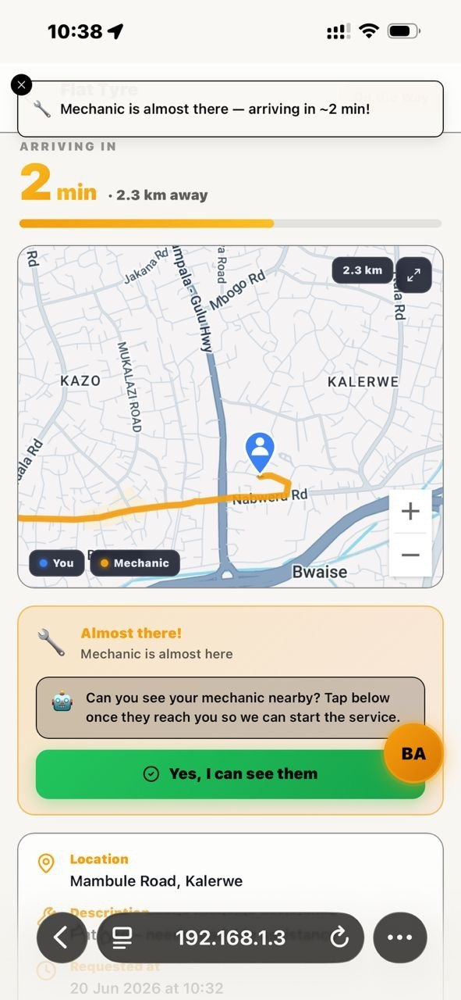

The hardest part of waiting for roadside help is not the breakdown itself — it is the not knowing. Is anyone coming? How far are they? Will it be five minutes or fifty? That uncertainty is what MOTOFIX set out to remove, by borrowing the best idea from ride-hailing: you can see your help coming, the whole way.
The right mechanic, automatically
When you request assistance, MOTOFIX does not just blast your request to everyone. It intelligently matches you with the most suitable provider nearby — weighing how close they are, whether they can handle your specific problem (a mechanical fault, a tow, or both), and their rating. A driver who needs towing is routed to providers who can actually tow. The result is faster, more reliable help and less time stranded.

Watch them approach, live
Once a mechanic accepts, the MOTOFIX map comes alive. You see their location and yours, the route between you, and a live estimated time of arrival that updates as they travel. As the mechanic moves, the route shrinks in real time — so a glance at your phone answers the only question that matters: how long until help arrives.

That same map keeps the mechanic informed too, so both sides are always on the same page. It is a small thing that changes everything: a breakdown stops feeling like being abandoned and starts feeling like help is genuinely on the way. Peace of mind is not a luxury when you are stuck on the roadside — it is the whole point.